Placing feature library members
Placing synchronous feature members
You place a synchronous library member in a document by dragging the library member from the Feature Library page to the application window.
When you paste a feature library member, the origin of the steering wheel is the origin of the feature library member. The orientation and position are maintained. You cannot locate a keypoint when pasting the feature library. You can use the Move and Rotate commands to precisely position and orient the feature.
When placed, faces add as detached. You can use the Attach command to attach the geometry to the new model.
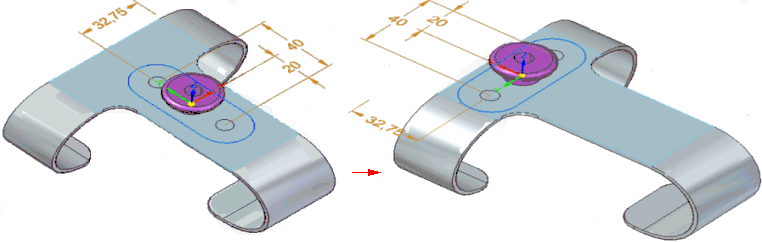
Placing ordered feature members
You place an ordered library member in a document by dragging the library member from the Feature Library page and dropping it into the application window.
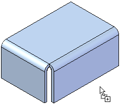
When you drop the ordered member into the application window, the feature creation process starts, similar to when you create a feature from scratch. A command bar and the Feature Set Information dialog box appear, so you can define the required and optional elements for positioning the library member on your model.
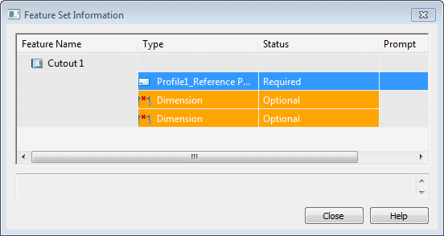
The basic steps for placing an ordered library member include:
-
Define the required elements, such as the profile plane and profile orientation.
-
Define the optional elements, such as dimensions that reference external elements.
-
Defining the profile plane and the profile orientation
The profile for the member attaches to the cursor so you can position the feature approximately where you want it. When you move the cursor over a planar face or reference plane, the profile for the feature orients itself with respect to the x-axis of the profile plane.
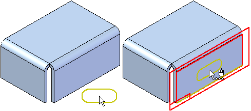
You also can select a different reference plane placement option using the Create-From Options list on the command bar.
For coincident and parallel reference planes, you can reorient the profile for the library member by defining a different x-axis for the profile plane. For example, when defining a coincident profile plane, you can use the N key to select the next linear edge as the x-axis. When the profile is oriented properly, click to position the library member.
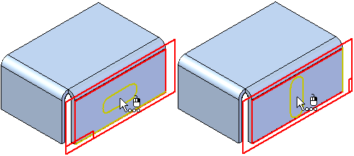
After you define the profile plane and profile orientation, the profile positions on the face, and the Feature Set Information dialog box updates to the next element in the list. If dimensions that reference external elements are in the list, the first dimension appears in the graphic window so you can redefine the external edge.
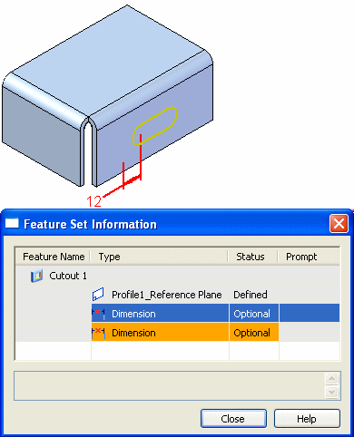
-
Redefining dimension edges while placing the library member
To redefine the external edge for a dimension while placing the library member, simply select an appropriate edge in the graphic window (A). The dimension attaches to the selected edge, using the dimension value that appears (B). The profile updates its position, and if another dimension that references an external element is in the list, it appears in the graphic window (C).
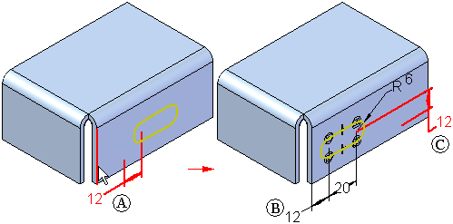
You can then select an edge for the next dimension (A), and the profile updates again (B). If this is the last element in the Feature Set Information list, the completed feature appears in the graphic window. The value of the dimensions reflects the original dimension value when you defined the library member.
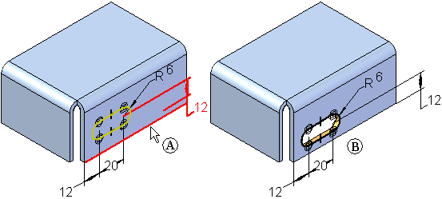
If this is the only copy of the library member you want to place, you can click the Close button to close the dialog box. If you want to place another member, you can click the Repeat on the command bar.
-
Placing additional copies of the library member
After you place a library member, you can place another copy using the Repeat button on the command bar. You can place a copy on the same face, (A), or a copy on a different face (B).
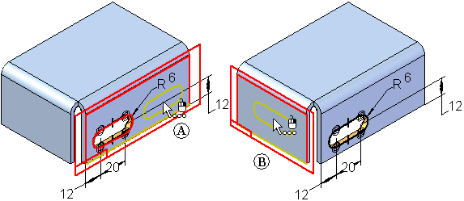
If you place another library member on the same face as the original member, you will likely want to avoid placing both copies directly on top of one another. If you select the same edges for the dimensions that reference external elements, the second member places directly on top of the first member. This can cause the feature to fail, but you can fix it by editing the dimensions for the feature later.
You can also avoid this by not selecting an edge for one of the dimensions during placement of the library member. For example, you can skip the 12 millimeter dimension shown (A), by clicking the next row in the Feature Set Information dialog box (B).
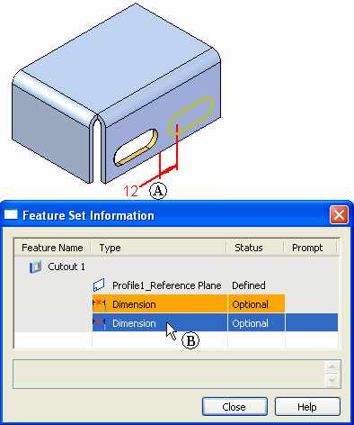
The next dimension appears in the graphic window (A). In this case, you can select the same edge (B) as the first member. The profile and feature place on the face, and the dimension you skipped appears in the failed color (C) to indicate that it needs to have its external edge defined. You can then close the dialog box and edit this feature to define the dimension edge and edit its value.
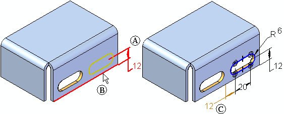
-
Library members with multiple features
You can create library members that contain more than one profile-based feature. For this type of member, the reference plane for each profile-based feature is captured in the Feature Set Information dialog box as a required element. You must redefine the profile plane for each feature in the library member at placement time.
-
Feature library member behavior after placement and feature groups
After you place a feature library member on a model, it is treated the same as features you construct manually. You edit them in the same fashion. A feature group is created in Feature PathFinder for library members that consist of multiple features. In this example, there were three feature library members placed on the model. Two with single features (A) and (B), and one with multiple features (C). Notice that only one feature group was defined.
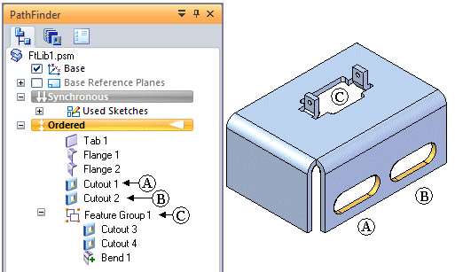
How do I
Create an unmanaged feature library memberPlace a feature library member into another document
Create a Teamcenter Feature Library member
Learn more
Feature librariesStoring features in a library
Redefining parent edges
Feature library guidelines
Look up more details
Feature Library tabTeamcenter Feature Library tab